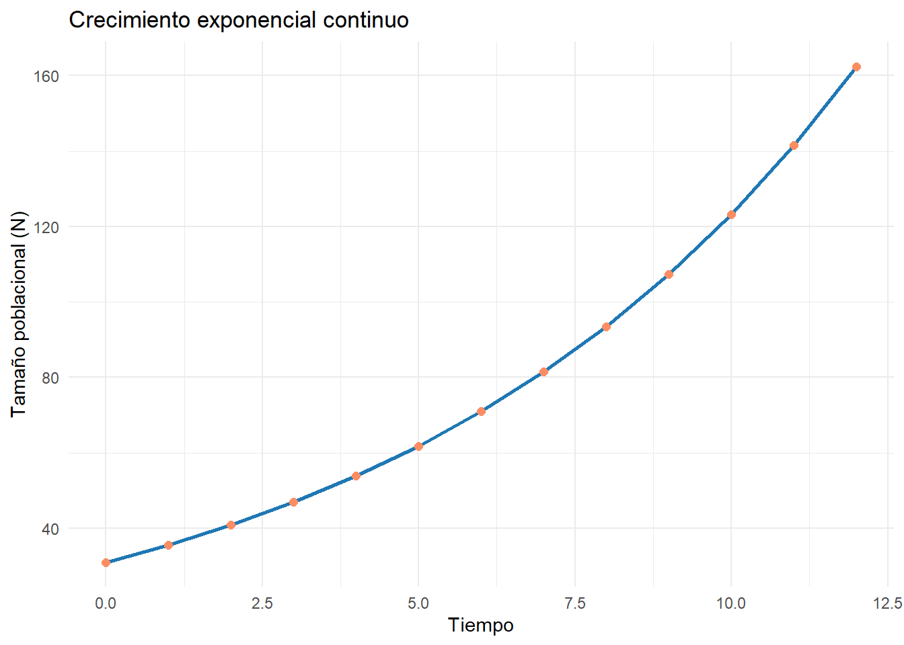
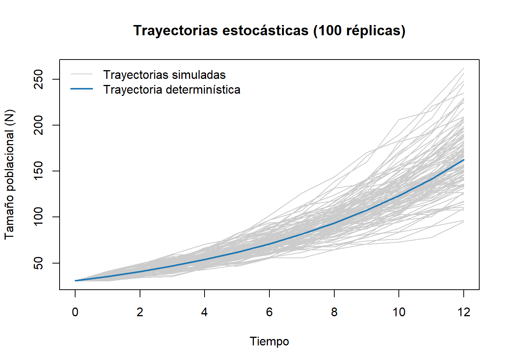

Código
install.packages(c("ggplot2")) # solo la primera vez
Imagen tomada de Vladimir Blyufer en Pexels.
La Ecología de Poblaciones puede ser considerada como un cuerpo teórico y conjunto de metodologías que estudian los aspectos cuantitativos de los individuos en sus poblaciones. Tiene como objetivo el estudio de las poblaciones y que trata de su dimensión, estructura, evolución y características generales, considerados desde un punto de vista cuantitativo. La dinámica de poblaciones utiliza conceptos demográficos, para saber si una población aumenta, disminuye o se mantiene constante. Lo anterior es de suma importancia, para entender el estatus de conservación de una población, explotación sostenida, control de plagas o especies exóticas, o conocer la acción de la selección natural. La dinámica poblacional consiste en saber cómo cambia una población en el tiempo, a partir de estimaciones de nacimientos, muertes, inmigraciones o emigraciones. Aunque suele considerarse a las poblaciones cerradas.


Imagen tomada de Damianius en Adobe Stock.
Entrenamiento de procedimientos básicos para el análisis de modelos exponenciales continuos y discretos en poblaciones silvestres y humana, con la aplicación de diferentes programas computacionales.
📋 Evaluación: Este taller se valora dentro del rubro Asistencia y participación en actividades de cómputo (puntualidad + dominio de los programas + análisis lógico de resultados, discutidos con escenarios de la vida real). Ten a mano el repositorio de clases: haberlo revisado también hace parte de la nota.

EcoLab es un programa que sirve de complemento interactivo a los capítulos del libro de Akcakaya et al. (1999), el cual se encuentra en una versión física en la biblioteca de la Universidad (📖enlace).
Este programa cuenta con cuatro módulos para: (1) generar números aleatorios, (2) realizar modelos simples que incorporan variabilidad y dependencia de la densidad, (3) producir modelos matriciales que incorporan estructura de edad y denso-dependientes, (4) realizar modelos de metapoblaciones.
Algunos de estos módulos los veremos en la asignatura (2 y 3), para que los estudiantes puedan manipular sus propios modelos y observar la simulación de sus trayectorias en el tiempo, complementando esta información con la que se ofrece en los capítulos del libro guía de Akcakaya et al. (1999).

Son dos programas que trabajan de forma simultánea y que permitirán el diseño y edición de diferentes variantes a los modelos de crecimiento exponencial y logístico de poblaciones. A diferencia del programa anterior (Ramas Ecolab), su manejo no es tan básico e intuitivo, porque requieren un manejo más complejo, pero con la ventaja de poder producir resultados con un mayor nivel de calidad, para informes y publicaciones en casi cualquier revista científica, entre otras ventajas.

Imagen tomada de Karina en Adobe Stock.
Nota: Previo a la sesión del taller de cómputo, es necesario que revisen el video de la clase en donde se explica el procedimiento; estos videos se encuentran en el repositorio del docente (ver 🎥enlace del repositorio, sección Semanas 5-6 - Poblaciones). El día de la sesión, el docente evaluará la revisión que se haya hecho de ese material.
💻Ramas Ecolab. Se requiere descargar el siguiente archivo y descomprimirlo en un directorio, previo a su apertura: Programa_Ramas_Ecolab.
💻RStudio y R. Para la descarga e instalación de estos programas, seguir el paso a paso del siguiente enlace (enlace). Instalar primero el R y posteriormente RStudio. * Este taller en R no se realizará!
Las pautas resumidas de este taller se encuentran en el siguiente enlace 📖Enlace al pdf del Taller.
1. Simulaciones de crecimiento exponencial (determinístico y estocástico).
A_ Entrar al programa RAMAS EcoLab y seleccionar el subprograma “Population Grow”.
B_ Seleccionar “General Information” e incluir el título y comentarios para el ejercicio.
C_ Entrar los siguientes parámetros al modelo:
D_ Entrar en “Model” y hacer click en “Population”. Editar los siguientes valores:
E_ ¿Cuál será la tasa instantánea de crecimiento exponencial? ¿Cuál será la velocidad de crecimiento?
F_ Seleccionar “Simulation” y hacer click en “Run”. Se desarrollará una simulación en 12 pasos de tiempo. Salir de la simulación.
G_ Seleccionar “Trajectory summary”, la cual simulará el crecimiento exponencial. ¿Cuál será el tamaño final de la población?
H_ Seleccionar “General Information” y editar el número de réplicas a 100, y hacer click en “Demographic stochasticity”.
I_ Entrar en “Population”. Editar los siguientes valores:
J_ Repetir los pasos E y F. ¿Alguna trayectoria es similar a la trayectoria determinística? ¿Qué causa estas diferencias? Salvar el documento.
K_ Seleccionar “Extinction/Decline”.
Simulaciones de crecimiento exponencial.
A_ Abrir RStudio y crear un script nuevo (Taller4.1_exponencial.R), o usar el archivo .qmd base del taller (enlace al final de esta sección).
B_ Cargar los paquetes necesarios (instalarlos la primera vez si hace falta):
install.packages(c("ggplot2")) # solo la primera vezlibrary(ggplot2)Warning: package 'ggplot2' was built under R version 4.5.3C_ Reproducir el modelo discreto (N_{t}=N_{0}\lambda^{t}) con los mismos parámetros usados en RAMAS EcoLab (Initial abundance = 31, Growth rate R = 1.148, Duration = 12), para poder comparar los resultados entre los dos programas:
N0 <- 31 # abundancia inicial
lambda <- 1.148 # tasa finita de crecimiento (R en EcoLab)
t <- 0:12 # duración (pasos de tiempo)
Nt_discreto <- N0 * lambda^t
data.frame(tiempo = t, N = round(Nt_discreto, 1)) tiempo N
1 0 31.0
2 1 35.6
3 2 40.9
4 3 46.9
5 4 53.8
6 5 61.8
7 6 71.0
8 7 81.5
9 8 93.5
10 9 107.4
11 10 123.2
12 11 141.5
13 12 162.4D_ Calcular la tasa instantánea de crecimiento r a partir de \lambda (r=\ln(\lambda)), y reproducir el modelo continuo (N_{t}=N_{0}e^{rt}):
r <- log(lambda) # tasa intrínseca de crecimiento
r[1] 0.1380213Nt_continuo <- N0 * exp(r * t)
data.frame(tiempo = t, N = round(Nt_continuo, 1)) tiempo N
1 0 31.0
2 1 35.6
3 2 40.9
4 3 46.9
5 4 53.8
6 5 61.8
7 6 71.0
8 7 81.5
9 8 93.5
10 9 107.4
11 10 123.2
12 11 141.5
13 12 162.4¿Cuál fue la tasa instantánea de crecimiento que obtuviste? Compárala con la que calculaste manualmente en el paso E de RAMAS EcoLab. ¿
Nt_discretoyNt_continuocoinciden? ¿Por qué deberían ser prácticamente iguales si usan la misma tasa de crecimiento?
E_ Graficar la trayectoria poblacional:
ggplot(data.frame(tiempo = t, N = Nt_continuo), aes(x = tiempo, y = N)) +
geom_line(color = "#1f78b4", linewidth = 1) +
geom_point(color = "#fc8d62", size = 2) +
labs(title = "Crecimiento exponencial continuo",
x = "Tiempo", y = "Tamaño poblacional (N)") +
theme_minimal()
F_ (Opcional) Estocasticidad demográfica. Simular 100 réplicas incorporando variabilidad en \lambda — equivalente al ejercicio de estocasticidad realizado en RAMAS EcoLab (pasos H a K) — usando la misma desviación estándar de R (0.075):
set.seed(123)
replicas <- 100
sd_lambda <- 0.075
sim <- sapply(1:replicas, function(i) {
lambda_var <- rnorm(length(t), mean = lambda, sd = sd_lambda)
N0 * cumprod(c(1, lambda_var[-1]))
})
matplot(t, sim, type = "l", col = "grey80", lty = 1,
xlab = "Tiempo", ylab = "Tamaño poblacional (N)",
main = "Trayectorias estocásticas (100 réplicas)")
lines(t, Nt_discreto, col = "#1f78b4", lwd = 2)
legend("topleft", legend = c("Trayectorias simuladas", "Trayectoria determinística"),
col = c("grey80", "#1f78b4"), lty = 1, lwd = c(1, 2), bty = "n")
Compara esta figura con la curva de riesgo de extinción/declive que obtuviste en RAMAS EcoLab (paso K). ¿Alguna trayectoria simulada en R se aleja mucho de la trayectoria determinística? ¿A qué se debe esa variabilidad?
G_ Aplicación al contexto Caribe colombiano. Reemplaza N_{0}, \lambda y la duración por los de una población real o hipotética de la región — por ejemplo, el crecimiento de una colonia de aves acuáticas en la Ciénaga Grande de Santa Marta, o la expansión de una especie invasora como el pez león (Pterois volitans) en un arrecife del Parque Tayrona — y responde: bajo el modelo exponencial, ¿en cuántos años se duplicaría esa población? ¿Es razonable asumir crecimiento exponencial indefinido para ese caso? ¿Qué factor limitaría ese crecimiento en la realidad?
Akçakaya, H. Resit, Mark A. Burgman, and Lev R. Ginzburg. Applied Population Ecology: Principles and Computer Exercises Using RAMAS EcoLab 2.0. Segunda edición. Sunderland: Sinauer Associates, 1999. (📖enlace del libro)

Gotelli, Nicholas J. A Primer of Ecology. Cuarta edición. Massachusetts: Sinauer Associates, 2008. (📖enlace del libro)

Notas de clase de poblaciones. Javier Rodríguez-Barrios. 📃Enlace al pdf de las notas de clase

Ecuaciones requeridas para las clases de poblaciones. Javier Rodríguez-Barrios. 📃Enlace al pdf de las ecuaciones

Diapositivas para las clases de poblaciones. Javier Rodríguez-Barrios. 📰Enlace al pdf de las diapositivas


Imagen tomada de Alex Green en Pexels.
El siguiente cuestionario es tomado de las notas de clase 📰Enlace; se requiere resolver las siguientes preguntas, que servirán para realizar un entrenamiento previo a la evaluación que realizará el docente sobre modelos exponenciales en poblaciones. En la medida de las posibilidades, es necesario que cada ejercicio sea graficado y se analicen los resultados obtenidos.
Si se asume que la población mundial inicia con 8.1 billones en 2023, ¿cuál es la tasa de incremento anual en cada estimador? (El tiempo transcurrido es de 27 años, de 2023 a 2050). https://countrymeters.info/es/World